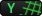
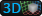

The Interface
The ProGrids Panel displays the following buttons and options:
1. Snap Size and Settings
Click this button to open the snap settings window, where-in you can set snap increment and other settings.
Units are in meters by default, or you can choose inches, feet, etc. See the Preferences section for more details.
Hint Use the
+and-keys to quickly change the Snap Size
| Setting | Description |
|---|---|
| Snap Value | Set the increment to snap objects to in world coordinates |
| Major Line Increment | How many lines to show between highlighted lines |
| Snap on Scale | When enabled, applies snapping to object scale values |
| Snap as Group | When enabled, multiple selected objects retain their relative positions to one another when moving |
| Grid Units | Defines the unit of measurement that snap value is measured in |
| Angle | When in orthographic views an additional line is drawn at this angle |
| Predictive Grid | When enabled, ProGrids will automatically set the rendering grid plane according to object movement |
2. Grid Visibility
Toggle the grid visuals on or off.
Note that objects will still snap with grid visibility toggled off.
3. Snapping Enabled
Enable or disable snapping to the grid when moving objects.
4. Push to Grid
Move all selected objects to on-grid positions, on each axis.
5. Follow Grid
When enabled the grid will automatically move position itself at the origin of the current selection. When disabled (or "locked") the grid stays anchored at it's position.
While locked you can "nudge" the X, Y, or Z grid along it's axis by using the bracket ([ ]) keys.
6, 7, 8, 9. Set Grid Plane
6. Set Grid Plane X 
Set the grid to render on the X axis (facing to the left/right).
7. Set Grid Plane Y 
Set the grid to render on the Y axis (facing up/down).
8. Set Grid Plane Z
Set the grid to render on the Z axis (facing forwards/backwards).
9. Perspective Grid 
Renders a grid with all 3 axes.
Angle Visibility
Toggle the visibility of the angle guides when in orthographic scene rendering mode.
Keyboard Shortcuts
Single key shortcuts are enabled when the scene view is in focus.
+ or - : Hit the "plus" or "minus" key to make the grid larger/smaller by one increment (see "Customizing ProGrids")
[ or ] : Use the bracket keys to nudge the X, Y, or Z grids perpendicular to their facing direction, by one increment.
S : Hold S to swap between Axis Constraint Modes (see "Axis Constraints", above)